Project · Interactive Data-Viz
Torre Glòries
I had the tremendous opportunity to help concept, design, and animate a permanent exhibit within the Torre Glòries, Hyperview Barcelona, an experience that surfaces the day-to-day interactions between the people of Barcelona and their environment.
- Role
- Design & Motion
- Studio
- Rare Volume
- Location
- Barcelona, Spain
 Play film · 2m 10s
Play film · 2m 10s
Overview
A new way of seeing
The exhibit is a unique space to teach visitors a new way of seeing—to look beyond the surface of a city, and to observe the environmental interactions between the city and its population.
Housed on the base floor, I was able to work on three of the four visualizations—Wind, Sky Above Us, and Soundscapes—bringing to life the data we don’t often see with the naked eye.
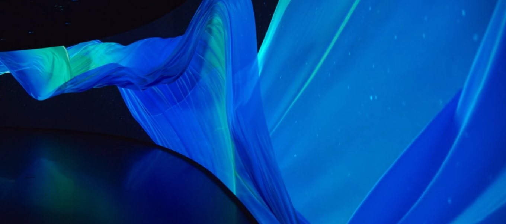
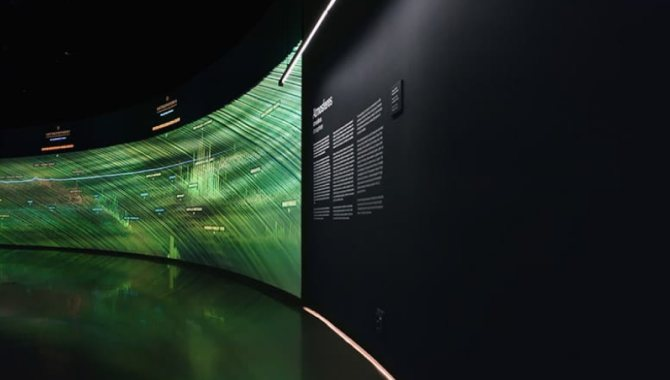
01 — Wind
Generative art, and a meteorological instrument
Powered by Barcelona’s wind data, a beautiful banner ebbs and flows across the panoramic canvas, representing a range of data sets such as wind speed, direction, air quality, and aerobiology such as pollen and spore levels.
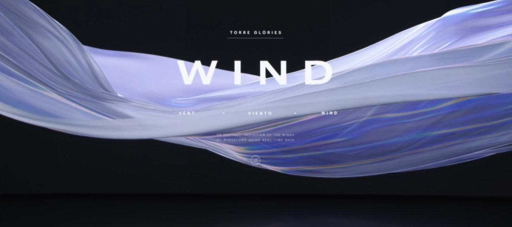
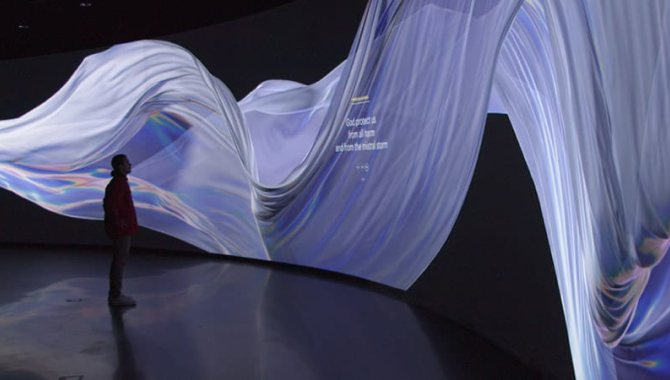
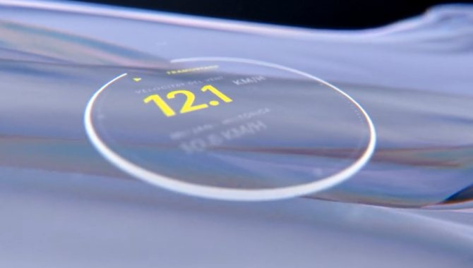
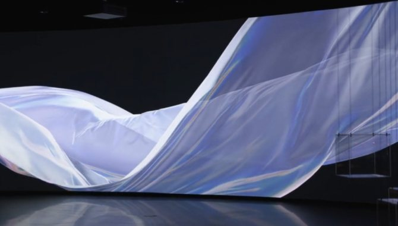
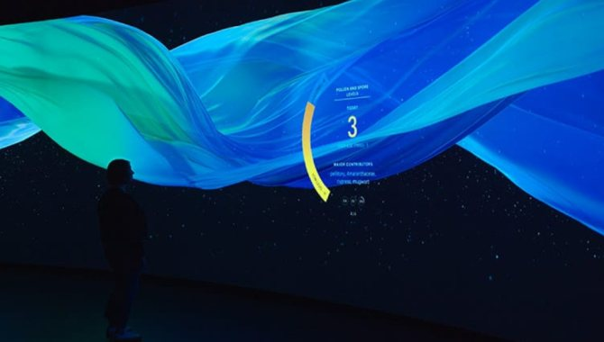
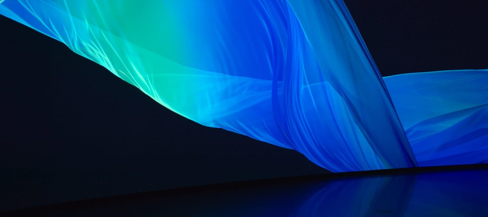
02 — Sky Above Us
A realtime view of the heavens above Barcelona
A sea of stars fill the panoramic canvas, their positions inextricably tied to the rotation of the Earth. Mapped against this backdrop are the positions of the planets, constellations, and satellites.
As visitors pass through the space, motion reveals the dimensions to which humans influence and impact the sky, whether it is light pollution, satellites, or left over rocket parts.
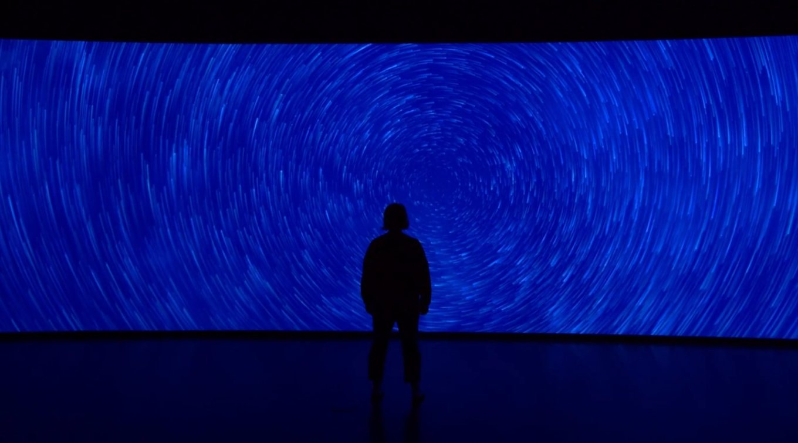
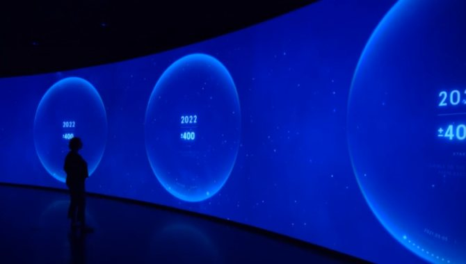
Planets, constellations and satellites— plotted in real time against the stars.
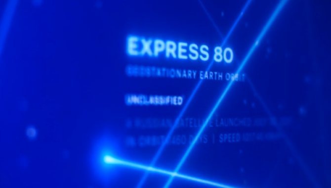
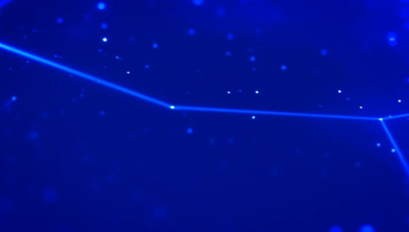
03 — Soundscapes
A spectrographic picture of the city
A spectrographic visualization of the sounds of Barcelona’s rivers, oceans, mountains, and city. Each of the four soundscapes (Sea, City, Mountain, River) is composed of three sources (animal sounds, nature sounds, and human sounds). Together they paint a sonic picture of Barcelona as it exists day to day.
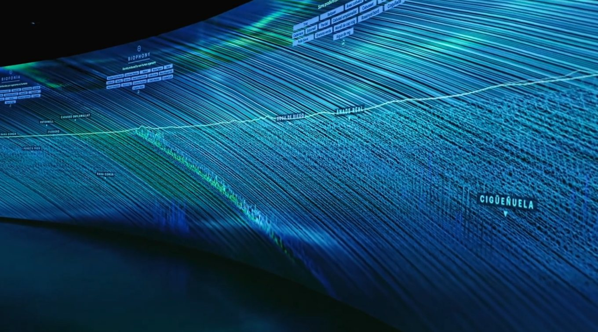
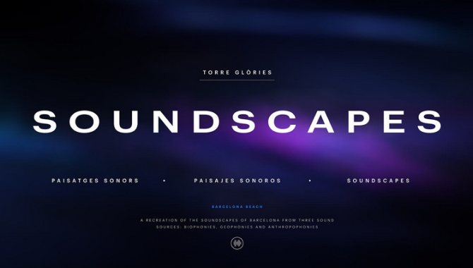
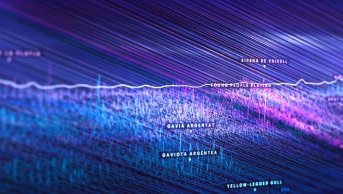
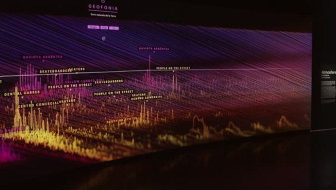
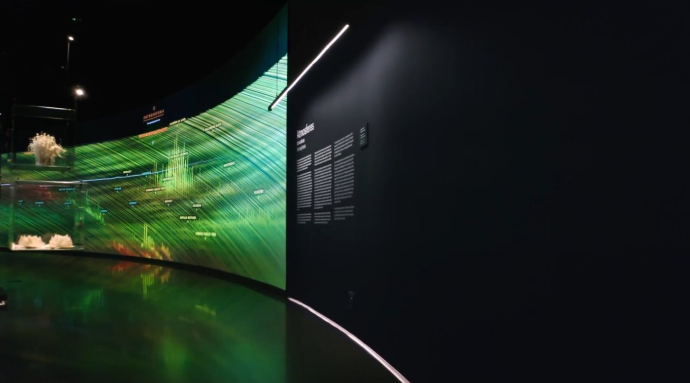
Credits
- Creative Director
- Jonathan Kim
- Technical Director
- Andrew Bell
- Head of R&D
- Robert Hodgin
- Head of Production
- Allison Keiley
- Interactive Director
- Alvin Groen
- Developers
- Andrew Bell, Greg Kepler, Simon Geilfus, Paul Houx
- Design & Motion
- Jonathan Kim, Robert Hodgin, Luka Schulz, Alvin Groen, Evan Stalker, Hanbi Sung, Rick Kuan, John Lee
- Executive Producer
- Jillian Stevens
- Producer
- Grace Park